JunctionX Korea 2026 · Upstage 트랙(2026.08.21 – 08.23)
4인 팀에서 「Solar for Bid」의 기획과 AI 파이프라인을 맡았습니다.
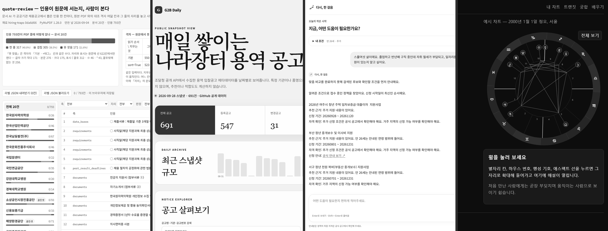
문서를 다루는 일을 에이전트로 돌리고 그 결과가 정말 맞는지 재는 하네스를 만듭니다.
결과를 내기 전에 맞고 틀림을 가릴 방법부터 마련합니다. 코드는 주로 Claude Code가 쓰고 저는 무엇을 잴지 정한 다음 나온 결과를 다시 셉니다.
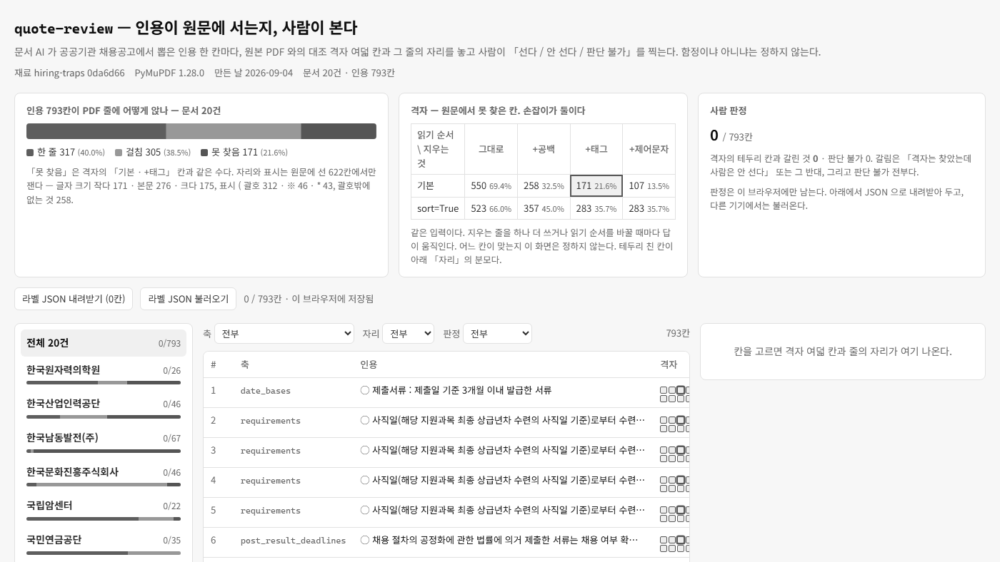
이 화면에서는 인용 793칸이 원본 PDF에 실제로 있는지 사람이 한 칸씩 확인합니다. 인용은 문서 AI가 공공기관 채용공고에서 뽑았습니다. 대조 격자 여덟 칸과 그 줄의 자리를 나란히 놓고 칸마다 원문에 있는지, 없는지, 판단할 수 없는지 가운데 하나를 고릅니다.
무작위 스무 칸 중 넷이 격자와 어긋났는데 그중 둘은 격자가 잡을 수 없는 종류였습니다.
스무 칸은 표본일 뿐이고 793칸의 사람 판정은 아직 0입니다.
공공기관 채용공고 20건으로 Upstage Studio를 시험해 봤습니다. 제 에이전트 19개는 노드 14종 가운데 4종을 썼습니다. 같은 문서를 두 번 넣었더니 값이 달라졌습니다.
같은 PDF를 읽기 순서만 바꿔 읽었습니다. 채용공고 104건 중 94건(90.4%)에서 글자는 같은데 순서만 달라졌습니다. 처음엔 121건으로 발표했지만 사본 17건이 섞여 있어 바로잡았습니다.
PDF에서 0.25em 이상 벌어진 자리에 공백이 안 들어가는 비율은 Type 3 글꼴이 79.0%, Type 0이 1.5%입니다. 재는 단위를 잘못 잡아 나온 99.9%를 첫 발표 뒤에 고쳤습니다.
집계 대조(건수 + 금액 합계) 단계까지만 보면 일곱 종이 잡히지 않습니다.
결함 열한 종을 심은 합성 원장으로 이행 검증을 네 겹으로 나눠 쟀습니다. 건수와 금액 합계만 맞춰 보고 끝내면 열한 종 중 일곱 종이 그대로 빠져나갑니다.
설계·측정 정운 · 구현 Claude Code1.000은 라벨이 도구의 오탐 둘을 덮은 값이었습니다. 그 둘을 틀린 것으로 세면 97/99 = 0.980입니다.
옵시디언 위키링크가 실제로 어디로 가는지 따져서 안 가는 것만 사유를 붙여 보고합니다. 발표한 정밀도 1.00은 도구의 오탐 둘이 라벨에 묻힌 숫자여서 0.980으로 정정했습니다. 재현율은 재지 않았습니다.
설계·측정 정운 · 구현 Claude Code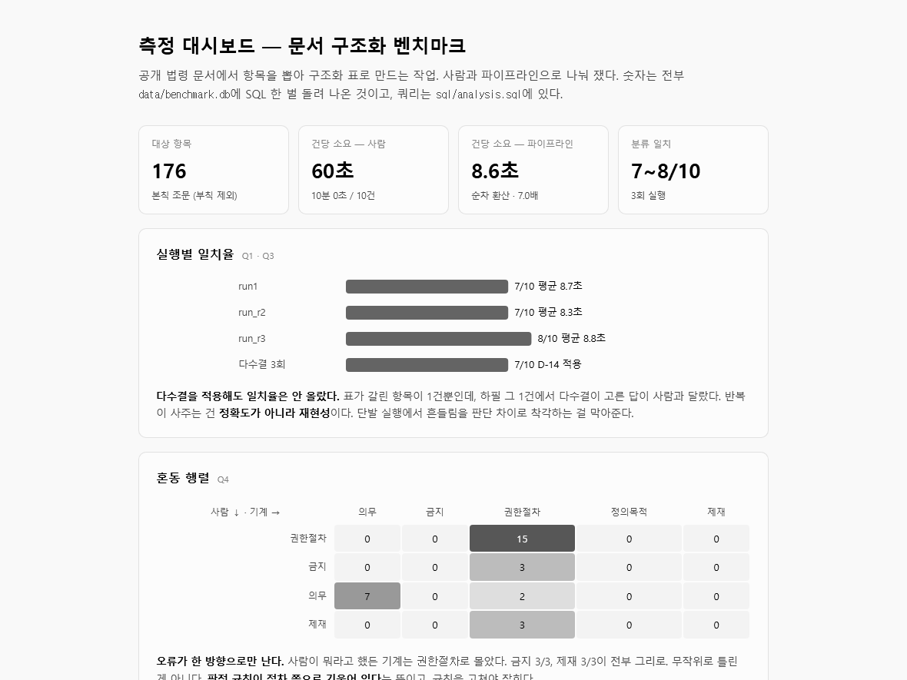
도로교통법 조문 10건을 사람과 파이프라인이 따로 분류하고 요약했습니다. 본문을 한정하는 단서 4건 중 요약에 살린 것은 사람 0건, LLM 0~1건이었습니다. 기계 스캔을 붙이자 4건이 모두 잡혔습니다.
설계·측정 정운 · 구현 Claude Code짙은 띠가 무작위 추측의 95% 구간입니다. 어떤 방법도 이 띠를 넘지 못했습니다.
자동차 리뷰 댓글의 감정을 가르는 분류기를 골든셋 198건과 부트스트랩 95% 구간으로 평가했습니다. 가장 나은 SBERT도 macro F1이 0.376으로 무작위 추측(0.329)과 구분되지 않습니다.
설계·측정 정운 · 구현 Claude Code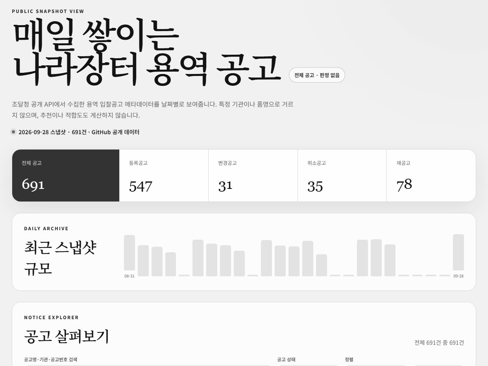
나라장터 용역 입찰공고 메타데이터를 매일 05:00(KST)에 예약 수집합니다. 수집이 불완전하면 파일을 만들지 않고 실패합니다. 2026.08.31–09.28, 29일 중 25일을 저장했습니다.
설계·측정 정운 · 구현 Claude Code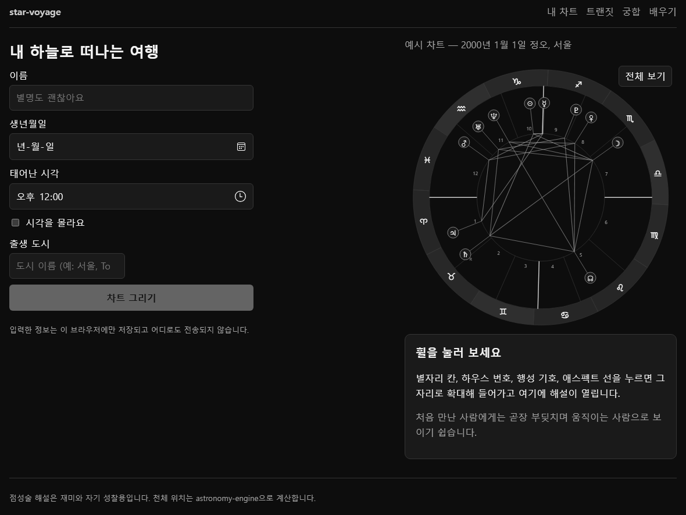
점성술 공부 사이트입니다. 출생 차트 휠을 지도처럼 끌고 확대하며 해설을 읽을 수 있습니다. 행성 위치를 Swiss Ephemeris 기준값과 대조해 최대 차이 0.004°를 README에 적었습니다.
설계·측정 정운 · 구현 Claude Code문서 작업에는 코드처럼 빨간 줄을 띄워 줄 판정자가 없어서 하나 만들어 넣었습니다.
장문 문서 작업을 에이전트에 맡길 때 틀린 결과가 조용히 넘어가지 않게 판정 루프를 짰습니다. 여기 규칙은 미리 설계해 둔 것 하나 없이 전부 무언가를 틀린 다음에 생겼습니다.
설계·측정 정운 · 구현 Claude Code이미 끝낸 편집 넷을 다시 돌리자 결과가 0건으로 모이지 않고 세 종류로 나뉘었습니다. 파일 이름은 가렸습니다.
일괄 텍스트 편집에 영수증을 붙입니다. 시킨 건수와 바뀐 건수가 다르면 아무 파일도 쓰지 않습니다. 기대 건수의 기본값은 「1 이상」이 아니라 정확히 1입니다.
설계·측정 정운 · 구현 Claude Code마크다운 노트의 문항을 터미널에서 간격 반복으로 풉니다. 진도를 노트 옆 마크다운 표에 써서 기기 사이에 따라가게 합니다.
Public star-cards생년월일로 9:16 별자리 카드 여섯 장을 만들어 저장·공유하는 정적 사이트입니다. star-voyage의 계산 엔진을 그대로 씁니다.
Live이 파이프라인은 아이디어 한 줄을 기획·판단·설계·구현·검증·배포로 끌고 갑니다. 단계마다 사람 게이트가 섭니다.
Private엑셀 WBS 진척관리를 웹으로 옮겼습니다. 주차 스냅샷을 쌓아 지난주 대비 변화를 먼저 보여 줍니다.
Private폐쇄망 운영을 위한 프로젝트 관리 시스템입니다. 계정·권한, 대시보드, 채팅·게시판, CSV·XLSX WBS 분석을 담았습니다.
PrivateMABC 결선작 「다시, 한 걸음」과 그 고도화 판입니다. 청년정책 탐색과 필요서류·신청 준비를 돕습니다.
Private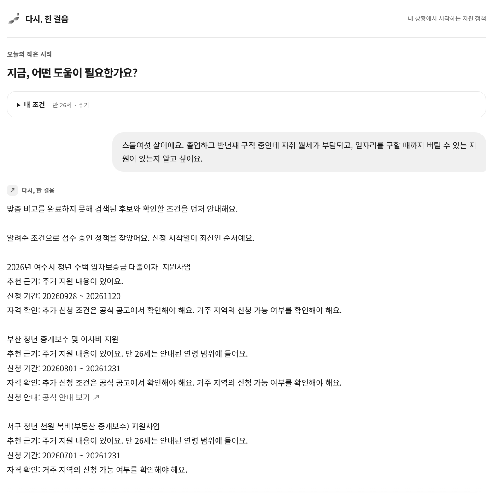
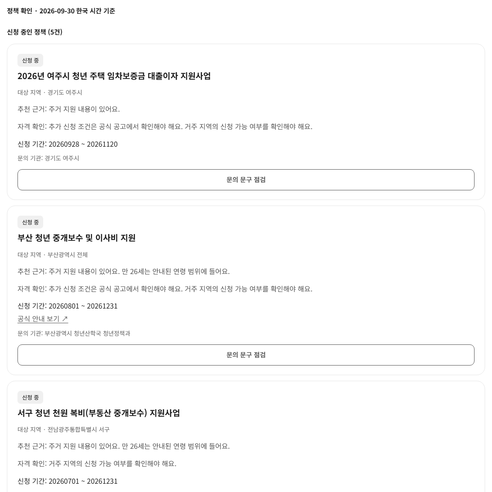
「다시, 한 걸음」 배포판에 가상 입력(만 26세 · 주거)을 넣자 이 응답이 돌아왔습니다(2026.09.30). 맞춤 비교가 끝나지 않아 검색된 후보를 먼저 보여 준 것입니다.
4인 팀에서 「Solar for Bid」의 기획과 AI 파이프라인을 맡았습니다.
개인으로 참가해 결선에 올랐고 결선작 「다시, 한 걸음」을 기획했습니다. Hermes 안의 Solar Pro 4에 구현을 지시하고 검증해 포스터 세션에서 발표했습니다.
one-step-beta.vercel.app5인 팀의 데이터·배치 담당으로 대시보드 집계 쿼리를 썼습니다. 합성 로그와 숫자 대조 스크립트를 고쳐 검증한 뒤 9월 20일에 제출했습니다.
파인튜닝이 금지된 고정 LLM으로 공고 한 건의 검토 항목 24개를 판정하는 파이프라인을 만들었습니다.
JunctionX Korea 2026 · Upstage 트랙 · 2026.08.21 – 08.23
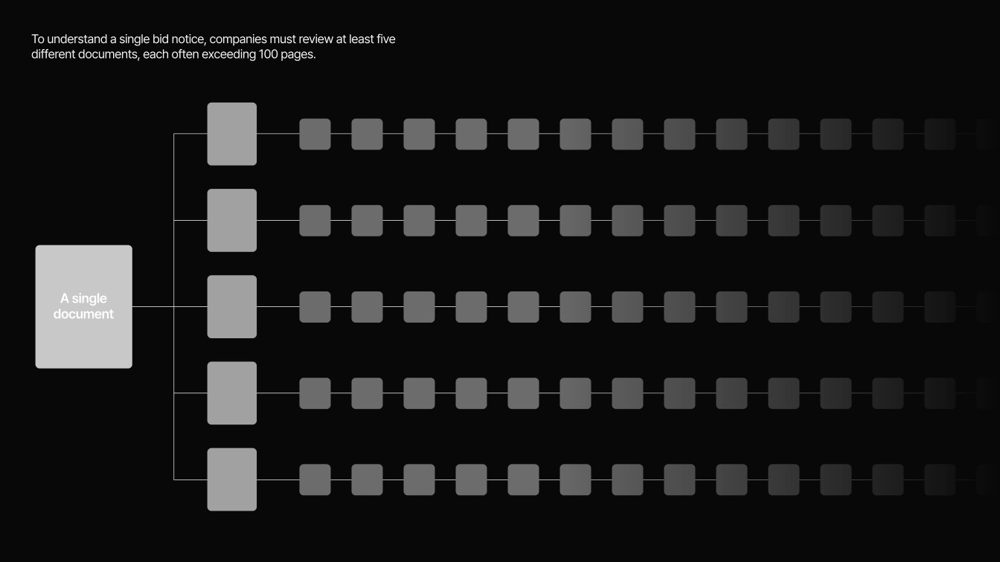
회사 서류를 한 번 올려 두면, 고른 입찰 공고마다 참가 자격 판정과 요구사항 체크리스트, 제출 서류 점검표를 근거 쪽과 함께 내는 문서 에이전트입니다.
입찰은 서류 하나가 빠져도 탈락할 수 있습니다. 그래서 그럴듯한 답보다 틀렸을 때의 처리가 더 중요했습니다. 모델의 답은 최종으로 받지 않고 백엔드가 한 번 더 셉니다.
JunctionX Korea 2026 · Upstage 트랙 · 발표 자료 25장 중 12 · 14 · 15쪽
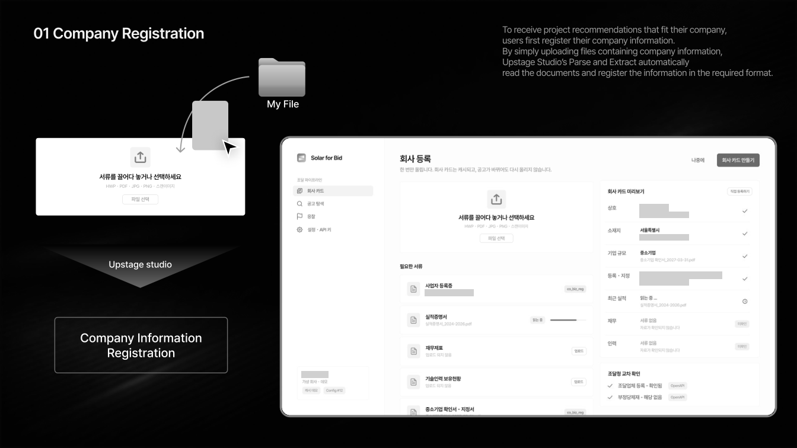
JunctionX Korea 2026 발표 자료 25장 가운데 화면 시안이 든 12 · 14 · 15쪽입니다. 슬라이드와 화면 디자인은 팀 디자이너가 했습니다. 화면에 들어간 판정 규칙은 제가 쓴 기획 문서에서 왔습니다.
화면은 디자인 시안이고, 실행 화면은 싣지 않았습니다. 가상 회사 이름과 데모 공고 한 건의 이름·번호, 요구사항 ID, 일부 서류 이름 같은 글자는 회색 막대로 가리거나 지웠습니다.
14·15쪽의 영어 설명은 발표 자료 문구 그대로입니다. WBS와 제출 점검표는 Studio가 아니라 백엔드가 부르는 Solar가 만들었습니다.
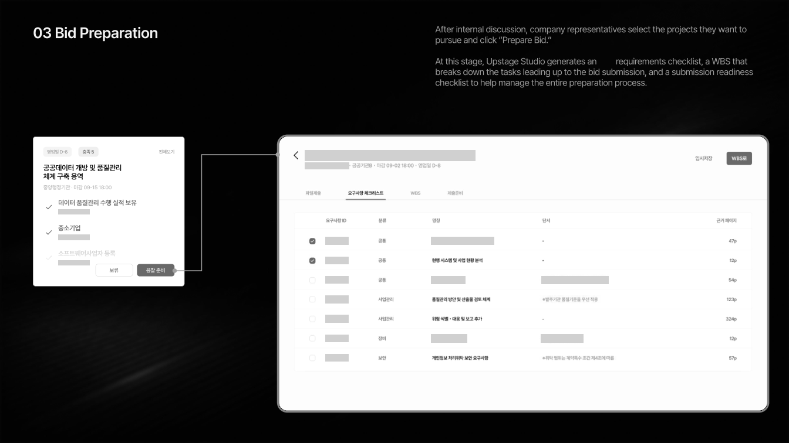
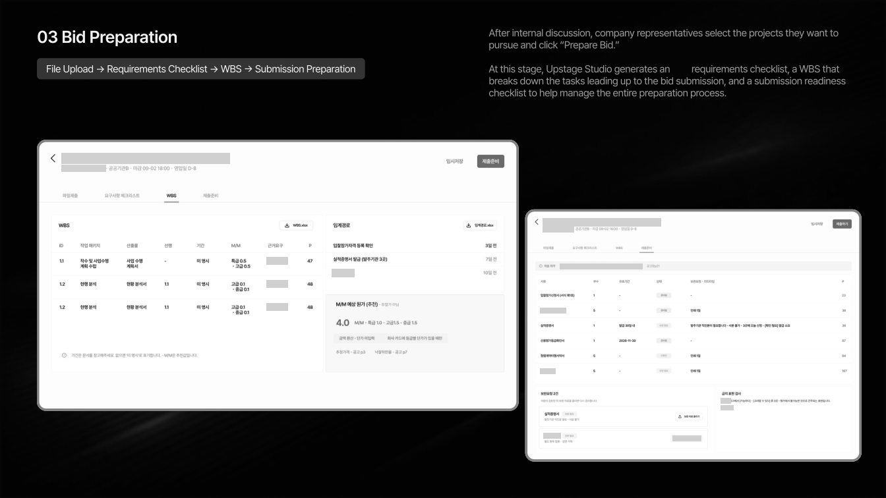
JunctionX Korea 2026 · Upstage 트랙 · 공고 한 건이 지나가는 길
발표 자료 16쪽의 파이프라인을 우리말로 줄여 옮겨 그렸습니다. 「사람이 결정」 표시가 붙은 곳은 04 추천과 07 제출 준비 두 군데입니다.
캐시를 쓰면 공고 한 건에 약 4분이 걸렸습니다(한 번 잰 값).
읽기는 Studio 에이전트가, 판정은 백엔드가 부르는 Solar가 맡습니다. 저희 계정의 Studio 판정 노드가 작업 4건 모두 입력과 무관하게 같은 64자 샘플을 돌려줘, 프롬프트는 두고 실행 위치만 백엔드로 옮겼습니다.
저는 기획서와 판정 규칙을 썼습니다. 피해야 할 표현 세 곳을 일부러 넣은 가상 문서로 시험하자 모델은 0곳을 돌려줬고, 백엔드에 쪽마다 같은 표현 목록을 찾는 검사를 더하자 세 곳이 모두 잡혔습니다.
원티드 AI Championship 2026 · 데이터·배치 · 2026.09.06 – 09.20
모두 합성 데이터이며 실제 시니어의 사용 기록이 아닙니다. 생성기 뼈대는 팀 하네스에서 왔고, 저는 앱 규칙에 맞게 고치고 적재 SQL·대조를 맡았습니다.
「미리창구」는 시니어가 실제 돈이 오가지 않는 연습 화면에서 송금·공과금 납부·자동이체를 연습하는 웹 서비스입니다. 어디서 왜 막혔는지는 익명 집계로 금융회사 담당자에게 보여 줍니다.
화면은 AI가 만들지 않고 매번 같은 고정 화면을 씁니다. 그래야 어느 단계에서 이탈했는지 비교할 수 있습니다. 심사 전에는 실사용자가 없어, 팀 하네스의 합성 데이터 생성기가 대시보드를 채웠습니다.
저는 데이터·배치를 맡아 팀 하네스의 집계 쿼리 초안 4종을 8종으로 늘렸습니다. 넘겨받은 합성 데이터 생성기에서는 앱이 낼 수 없는 숫자(한 단계 힌트 2회, 확인 화면 오류)를 찾아 그 칸만 고쳤습니다.
같은 숫자를 원본 이벤트·집계 CSV·정적 CSV·대시보드 캡처 네 곳에서 맞춰 봤고, 디자인 병합 전 운영 대조에서는 API와 배포 CSV 216칸이 기대값과 모두 일치했습니다. 실행은 상당 부분 Claude Code가 했고, 방향 결정과 결과 확인은 제가 했습니다.
원티드 AI Championship 2026 · 배포판 캡처 · 2026.10.01
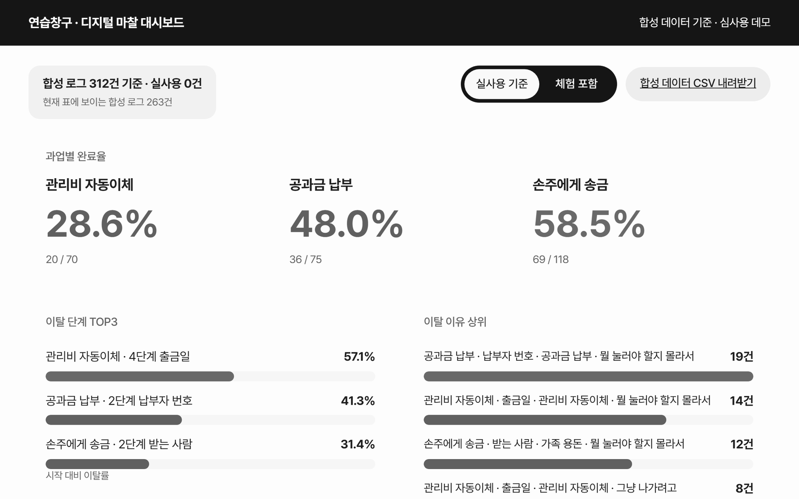
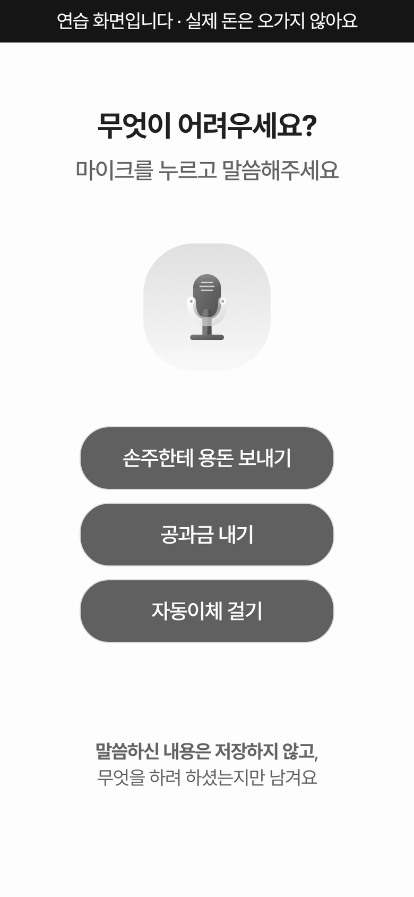
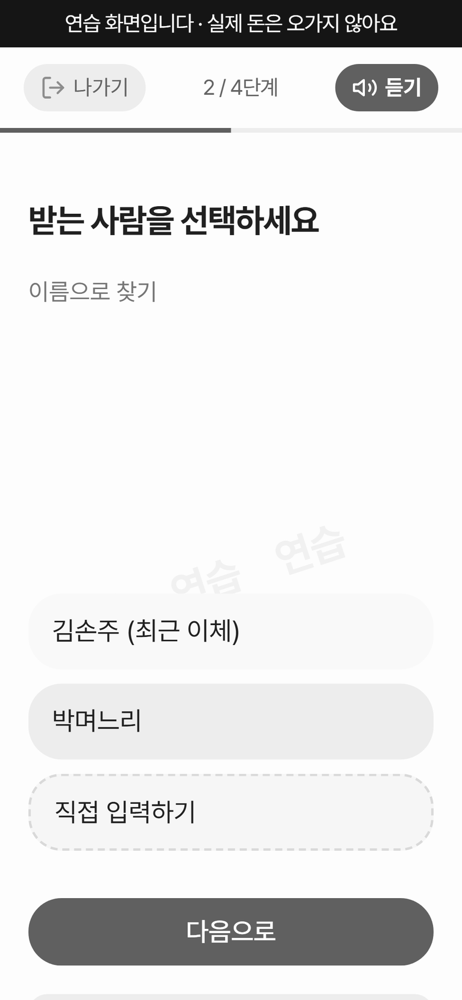
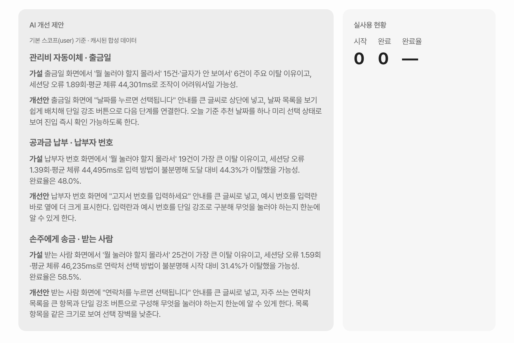
화면 설계와 구현은 다른 팀원들(디자인 · 풀스택 · 실시간 LLM 담당)이 했고, 팀 동의를 받아 실었습니다. 제가 맡은 쪽은 이 화면에 나오는 숫자와 AI 제안 문장입니다.
넘겨받은 합성 데이터를 앱 규칙에 맞게 고쳐 적재 SQL로 만들었고(운영 DB 적용은 풀스택 담당), 9월 14일에 화면 뒤 API 값을 기대값과 한 칸씩 대조했습니다.
가운데 결과는 검증 없이 그대로 넘어갔습니다.
부트스트랩 10,000회 · macro F1 0.376 (0.307 – 0.443)
산업인공지능학과와 ICT융합학부를 복수전공하고 2026년 8월에 졸업했습니다.
4인 팀 「Slack을 이용한 데이터 리포팅」에서 댓글 수집과 Superset 대시보드, 파이프라인의 양 끝단을 맡았습니다. 감정분석은 그때 맞는지 따져 보지 않았고 2026년에 youtube-sentiment-pipeline으로 다시 만들었습니다.
문서를 다루는 일을 에이전트로 돌리고 그 결과가 정말 맞는지 재는 하네스를 만듭니다.